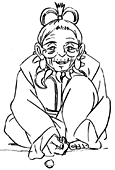
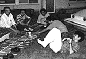
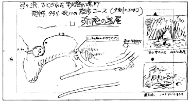

<html>
<head><meta http-equiv="Content-Type" content="text/html; charset=UTF-8">
<script>
  (function(i,s,o,g,r,a,m){i['GoogleAnalyticsObject']=r;i[r]=i[r]||function(){
  (i[r].q=i[r].q||[]).push(arguments)},i[r].l=1*new Date();a=s.createElement(o),
  m=s.getElementsByTagName(o)[0];a.async=1;a.src=g;m.parentNode.insertBefore(a,m)
  })(window,document,'script','https://www.google-analytics.com/analytics.js','ga');
  ga('create', 'UA-143959-3', 'auto');
  ga('require', 'linkid', 'linkid.js');
  ga('require', 'displayfeatures');
  ga('send', 'pageview');
</script>
<title>1996年7月 - 映画『もののけ姫』制作日誌</title>
</head>
<body bgcolor="#ffffff" link="#336699" vlink="#336699">


<font size=5 color=Blue >制作日誌　1996年7月</font><br>
<p>
<br>
<p>
96.7.01（月）<br>
　原画昇格テストが行われる。7人が挑戦。その取材で朝からテレビマンユニオンの鈴木さんが来社。ユニオンの新入社員の研修もかねてカメラを廻していた。<br>
　夕食は宮崎監督御自ら作ったソバ。所沢からこの日のために買ってきたザルにてんこ盛りにされ出される。<br>
<p>
96.7.02（火） <br>
　本日もテレビマンユニオンの取材が入る。<br>
　昨日行われたテストの採点が、宮崎監督、安藤作画監督、近藤喜文氏の三者で行われる。内容が難しかったのか、合格ラインに達した人が出ず、昇格者なし。<br>
<p>
96.7.03（水）<br>
　ＣＧ部で仕上げ対象のデジタルペイント講習会が行われる。<br>
<p>
96.7.04（木） <br>
　ディズニー映画「ノートルダムの鐘」の35ミリ上映会がバーで行われる。わりと評判は良かった。宣伝会社メイジャーの人によれば、ジブリのスタッフ達は、他の試写会ではまったく笑いの無かったシーンで大爆笑していたとのこと。<br>
<p>
96.7.06（土） <br>
　「青い凧」で有名な中国の映画監督の田荘荘さんが来社、宮崎監督に3時間以上のインタビューを行う。<br>
<p>
96.7.08（月） <br>
　 朝から再び田荘荘さんが来社し、鈴木プロデューサー、安藤、舘野、保田、山本二三、奥井、菅野らにインタビュー、それぞれの仕事場をビデオカメラに収める。朝11時から始まった取材は、最後の宮崎監督（昨日だけではもの足りず再びインタビューを敢行）が終わった時点で夜の10時になっていた。田監督の恐ろしいまでの粘りと根気。さすが中国共産党と10年以上にわたって戦ってきた男である。
<br>
<p>
96.7.11（木）<br>
　ディズニーから「ノートルダムの鐘」の監督二人が来社。<br>
　絵コンテが1,200CUTを超えたが、未だに終わりそうな気配がない。おまけに1CUT当たりの秒数がますます短くなっている。<br>
<p>
96.7.12（金） <br>
　屋上に木製のベンチとテーブルが完成。早速夕方に美術班と有志が集まり軽くビールパーティが開かれる。 <br>
<p>
<center>
<br clear=all>
<font size=1>ビールパーティを開く有志の面々</font>
</center>
96.7.13（土） <br>
　絵コンテCUT1,141～1,225まで 75CUTアップ（CUT1,212～1,221まで欠番）、これで計100分17秒となる。ちなみに1CUT平均秒数は4.91秒。<br>
<p>
96.7.16（火） <br>
　今日から社員旅行。場所は、3年前にも行った、伊豆弓ケ浜の朝日休暇村。<br>
<p>
96.7.17（水） <br>
　今日も社員旅行で伊豆。<br>
<p>
<center>
<br>
<font size=1>宮崎監督ご推薦の弓ヶ浜散歩コース・弥陀の岩屋</font>
</center>
96.7.18（木） <br>
　夕方新宿駅で全員無事解散。<br>
<p>
96.7.19（金） <br>
　賀川さんの打ち合わせをおこなう。CUT1,182～1,225まで<br>
<p>
96.7.22（月） <br>
　朝から宮崎監督が、今朝おこなわれたオリンピックのサッカー中継（日本がブラジルに勝った）や、昨日放送されたツール・ド・フランス総集編に興奮気味でやたらとテンションが高い。<br>
<p>
96.7.23（火） <br>
　宮崎監督、鈴木プロデューサーらがホテルオークラでのディズニーとの提携記者発表に出席。<br>
　宮崎監督が「1,500CUTとして今のペースで原画はいつまでかかる？」と聞いてきた。予定の1,380CUTより120CUT増えるということは、良いペースでいって1ヶ月、現在のペースで行くと2カ月近くスケジュールが延びてしまうことになる。もっとも元々のCUT数でも原画10月いっぱいアップというのもほとんど不可能な状態で、1,500CUTでこのままのペースだと1月一杯までかかりそうな気配だ。原画メンバーを増やすことを考えなければならない。宮崎監督と要相談。<br>
<p>
96.7.31（水） <br>
　男鹿さんができ上がったボードを持って来社。いくつか直しが出るが、すぐに3階で直しを入れてくれる。<br>
<table border align="right"><tr><td><a href="968.html">次のページへ</a></td></tr></table><br>
<p><br>
<p>
<hr>
<p>
<table border align=right><tr><td>
<a href="./diary.html">日誌索引へ戻る</a>
</td></tr></table>
<br>
<br>
<table border align=right><tr><td>
<a href="./">「もののけ姫」トップページへ戻る</a>
</td></tr></table>

</body>
</html>